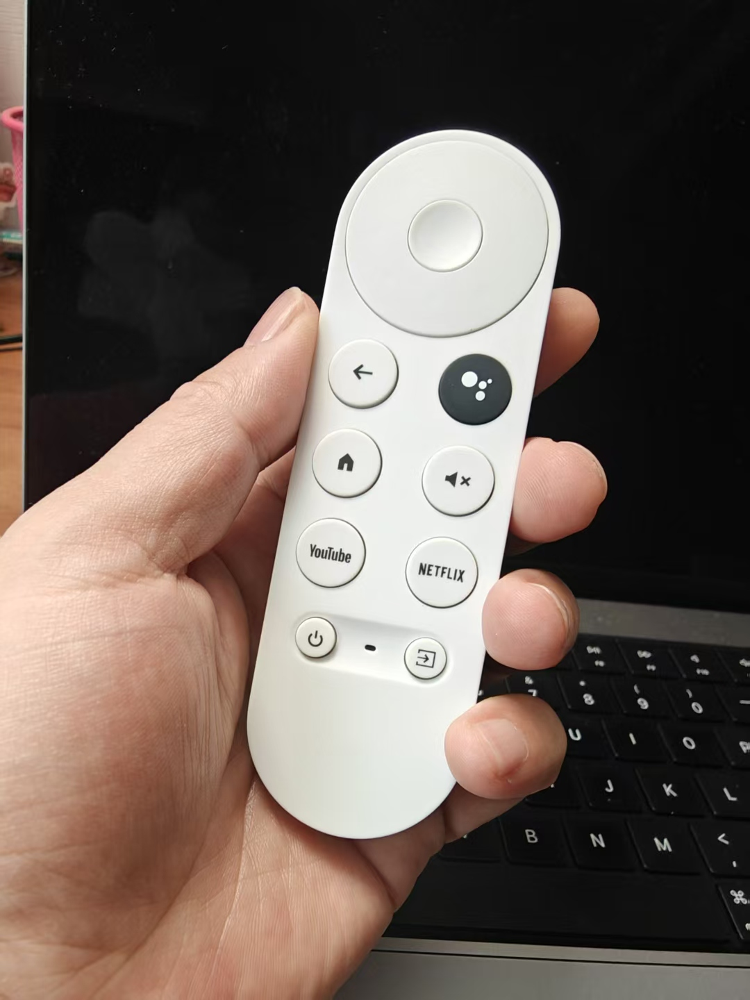

Google Chromecast Voice Remote
型号：G9N9N · 两节 AAA 电池- 已知硬件版本与接入途径（同为 VID/PID
18D1:9450· DISA0，连上后可在「遥控器连接」查看HID 版本、固件版本与「按键接入方式」）： ①0x0110 / 固件 26.2（PVT/MP）：标准系统 HID（原生），即插即用，语音与 14 颗普通按键全可用； ②A0 / 固件 26.7与0x0110 / 固件 26.0（CR PVT/MP，见 #256 ↗）：完全支持 · 蓝牙日志恢复（原生单键未送达应用，安装内置.mobileconfig并开启恢复即可解锁全部 14 键与语音）； ③0x011B（zhuhai_jieli杰理方案兼容款，见 按键实测 #7 ↗ 与 语音实测 #280 ↗）：全键日志恢复 · 语音受约 60 秒上限限制（Report2短报文被 macOS 丢弃，安装内置.mobileconfig并开启恢复即可使用全部 14 键；ATVV 语音可用，但实测在约 60.6 秒静默断流且MIC_EXTEND无效）。
理论上通过蓝牙日志恢复可以绕过 macOS 的系统限制，支持任意硬件版本的 G9N9N；若遇到此前未见过的特殊新版本，则需单独适配其报文格式。 - 按键映射：支持方向、OK、返回、主页、静音、音量加减、YouTube、Netflix、输入源和电源共 14 颗普通按键的单击、双击、长按与常用语配置。
- 语音、时长与状态灯：默认支持智能切换（点按免提）——短按并松手后保持免提收音（再按语音键或按其他键停止，松手瞬间约 0.2 秒硬件重连间隔），长按超过 0.7 秒则松手即停；也可在连接设置切换为纯「按住说话」。主机自动停麦时长可在「通用」设置中调整（可选 3 / 5 / 10 / 15 / 30 分钟，默认 5 分钟），但是否突破 60 秒取决于批次固件：
0x0110 / 固件 26.2已实测借助MIC_EXTEND连续免提 68.9 秒不断流；0x011B（zhuhai_jieli，见 #280 ↗）会忽略MIC_EXTEND并在约 60.6 秒静默断流（无AUDIO_STOP），当前版本仍受约 60 秒上限限制；26.7/26.0的长时保活表现尚待真机验证。传输语音期间底部白色指示灯常亮，应用读到电量时显示百分比。 - 首次设置：单按 OK 确认连接，再依次测试三个不同普通按键。默认媒体按键：YouTube 为上一首，Netflix 为下一首，输入源为播放／暂停；均可自定义。